A geom draws a shape from mapped data. A stat computes new values or geometry before drawing. This article gives small examples of the geoms and stats that draw data rows: points, paths, gridded surfaces, columns, distributions, intervals and reference geometry. Installation is covered in Get started. Surfaces, solids and fields covers meshes, function and fitted surfaces, level surfaces, hulls, solid glyphs and sweeps. Vector fields covers arrows and streamlines, and Implicit surfaces covers reconstruction from point clouds.
Points, paths, segments and text
Each row below contains a position and a label. Points draw one mark per row. Paths connect rows in their input order within each group.
d <- data.frame(x = c(0, 1, 2), y = c(0, 2, 1), z = c(1, 3, 2),
label = c("a", "b", "c"))
p <- ggplot(d, aes(x, y, z = z))
p + geom_point_3d(size = 3, colour = "#2E6F9E") + coord_3d()
p + geom_path_3d(linewidth = 0.8, colour = "#2E6F9E") + coord_3d()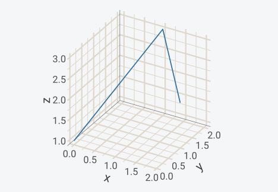
Segments use a start and an endpoint from each row. Text places labels at the mapped positions. A dropline joins each position to the selected face of the data box.
p + geom_segment_3d(aes(xend = x, yend = y, zend = 0),
linewidth = 0.8, colour = "#2E6F9E") + coord_3d()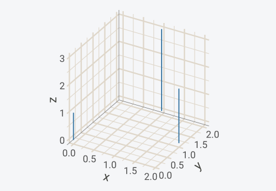
p + geom_text_3d(aes(label = label), size = 5) + coord_3d()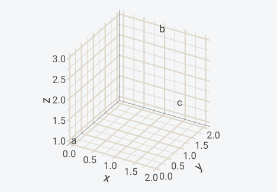
Text outlines can lie in a plane through each anchor.
normal gives its direction in normalized panel coordinates;
up gives the reading-up hint. The frame and aspect scaling
transform those directions into the displayed model. angle
rotates within the plane.
p + geom_text_3d(aes(label = label), orientation = "plane",
normal = c(1, 1, 1), up = c(0, 0, 1), size = 8) + coord_3d()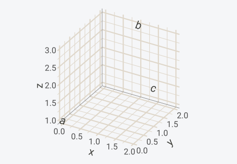
facing = "camera_plane" gives the outlines a shared
view-facing direction. facing = "camera_point" turns each
label toward the perspective eye from its own anchor. Each panel
resolves its orientation using its drawing camera; the HTML viewer
updates it during orbit and playback. The outlines participate in the
scene’s depth testing and picking.
p + geom_text_3d(aes(label = label), orientation = "plane",
facing = "camera_point", size = 8) + coord_3d(projection = "perspective")
p + geom_dropline_3d(onto = "zmin", linewidth = 0.8) +
geom_point_3d(size = 3) + coord_3d()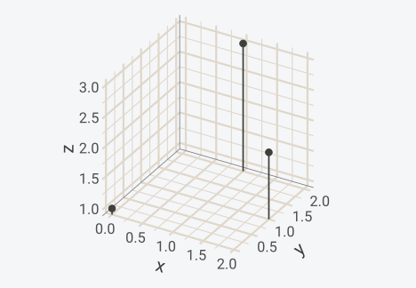
Labels with boxes and repelled labels
geom_label_3d() draws text on a box, which keeps it
readable over geometry. When labels crowd each other,
geom_text_repel_3d() and geom_label_repel_3d()
push them apart on the page and join each label to its point with a
segment, following ggrepel. Two of the five points below nearly
coincide.
named <- data.frame(x = c(1, 1.1, 1.2, 2, 3), y = c(1, 1.1, 1, 2, 1),
z = c(1, 1.2, 1.1, 2, 3),
name = c("alpha", "beta", "gamma", "delta", "epsilon"))
ggplot(named, aes(x, y, z = z, label = name)) + geom_point_3d(size = 2) +
geom_label_repel_3d(seed = 1, segment.colour = "grey40") + coord_3d()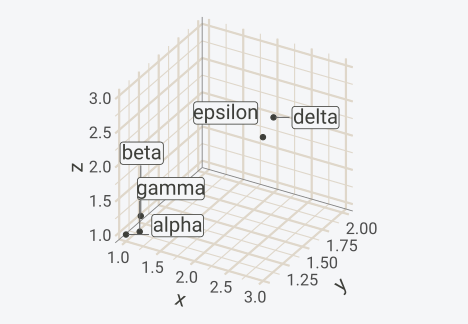
Labels are always drawn on top of the scene, so geometry never hides
them. seed fixes the repulsion so the layout is the same on
every render.
Polygons and bands
A polygon is an ordered ring of vertices in a plane after position transformations; the triangle below lies on a sloping plane. Use a group for each feature and a subgroup for each ring when a feature has holes.
triangle <- data.frame(x = c(0, 1, 0), y = c(0, 0, 1), z = c(0, 1, 1))
ggplot(triangle, aes(x, y, z = z)) +
geom_polygon_3d(fill = "#2E6F9E") + coord_3d()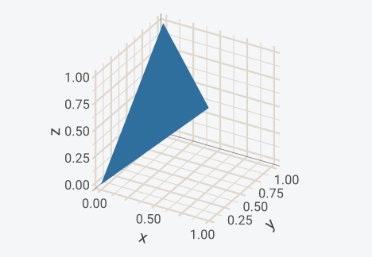
A band joins two boundaries. Mapping zmin and zmax produces a vertical wall along the x/y path. Six endpoint aesthetics can describe a band with boundaries that also differ in x and y.
band <- data.frame(x = seq(0, 4, length.out = 16), y = 0)
band$low <- sin(band$x)
band$high <- band$low + 0.5
ggplot(band, aes(x, y, zmin = low, zmax = high)) +
geom_band_3d(fill = "#2E6F9E") + coord_3d()
Surfaces and contours
A gridded surface connects adjacent pairs of x/y coordinates with
triangles. Scattered points can use Delaunay triangulation, which
connects nearby points in the transformed x/y plane, with
method = "delaunay". Within each group, each x/y pair must
be unique.
surface <- expand.grid(x = seq(-2, 2, length.out = 10),
y = seq(-2, 2, length.out = 10))
surface$z <- with(surface, exp(-(x^2 + y^2) / 2))
s <- ggplot(surface, aes(x, y, z = z))
s + geom_surface_3d(fill = "#2E6F9E") + coord_3d()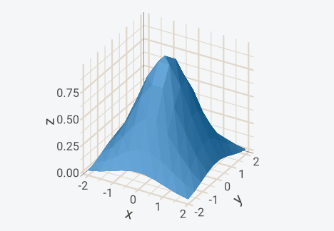
The surface stat exposes the triangulation step. The computed height
z_mean is the mean height of each triangle and can be
mapped to fill after the stat has run.
s + stat_surface_3d(aes(fill = after_stat(z_mean))) +
scale_fill_gradient(low = "#DCEAF3", high = "#2E6F9E") + coord_3d()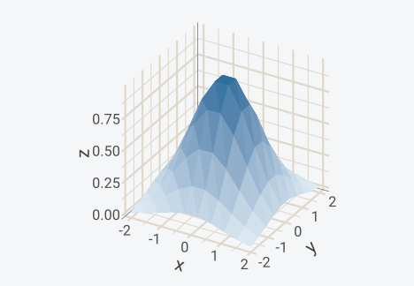
Contours trace equal heights. Filled contours draw bands between height thresholds. The plane argument chooses the surface, the floor, or a fixed height in original units.
s + geom_contour_3d(bins = 4, linewidth = 0.8) + coord_3d()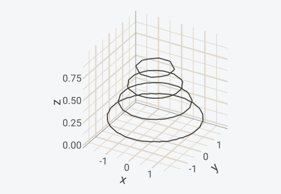
s + geom_contour_filled_3d(bins = 4, plane = "floor") +
scale_fill_gradientn(colours = c("#2E6F9E", "#2A7A7A", "#3F7A3D", "#9E5E0F", "#7A4F9E")) +
coord_3d()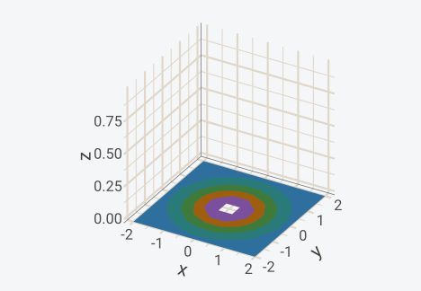
Images and textures
An image draped over a surface carries detail that would otherwise
need a mesh as fine as the image. texture takes a
texture_3d() image, or anything it reads (a colour matrix,
a numeric array from png::readPNG(), a PNG file). Each face
shows the image at its texture coordinates, which default to the x and y
positions spread over the image; extent places the image in
data units instead, and faces outside it keep their fill.
volcano_grid <- expand.grid(x = seq_len(nrow(volcano)), y = seq_len(ncol(volcano)))
volcano_grid$z <- as.vector(volcano)
coarse <- volcano_grid[volcano_grid$x %% 3 == 1 & volcano_grid$y %% 3 == 1, ]
checker <- matrix("#F2EFE6", 8, 8)
checker[(row(checker) + col(checker)) %% 2 == 1] <- "#2B5F75"
ggplot(coarse, aes(x, y, z = z)) +
geom_surface_3d(texture = texture_3d(checker, interpolate = FALSE)) + coord_3d()
An image can also lie on a plane of the panel box.
geom_raster_3d() turns values on a regular grid into one
image, one per level of the remaining axis, and
annotation_raster_3d() lays a given image on a plane. Both
are single faces of the scene, so they are foreshortened and hidden like
any other face; here the full-resolution height map lies on the floor
under the coarse surface.
ggplot(coarse, aes(x, y, z = z)) +
geom_raster_3d(aes(fill = z), data = volcano_grid, at = -Inf) +
annotation_raster_3d(matrix(grDevices::hcl.colors(8, "Zissou 1"), 1), plane = "xz", at = Inf) +
geom_surface_3d(fill = "grey85", colour = NA) +
scale_fill_viridis_c() +
coord_3d()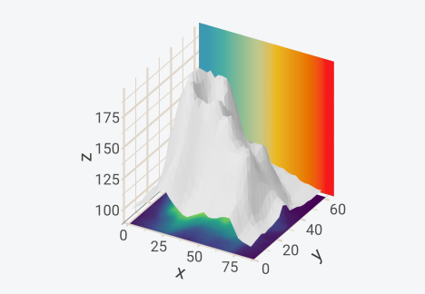
Columns, counts and extrusions
Columns occupy cells on an x/y lattice and extend from a baseline to z. A bar layer counts observations at each x/y combination. The count stat gives direct access to that calculation.
columns <- expand.grid(x = 1:3, y = 1:3)
columns$z <- seq_len(nrow(columns))
ggplot(columns, aes(x, y, z = z)) +
geom_col_3d(fill = "#2E6F9E") + coord_3d()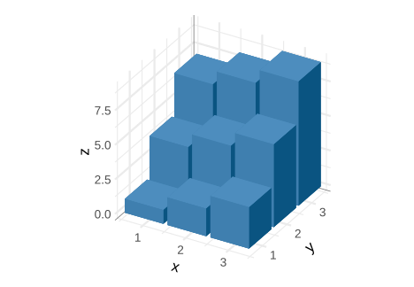
counts <- ggplot(mtcars, aes(factor(cyl), factor(gear)))
counts + geom_bar_3d(fill = "#2E6F9E") + coord_3d()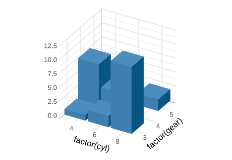
counts + stat_count_3d(fill = "#2E6F9E") + coord_3d()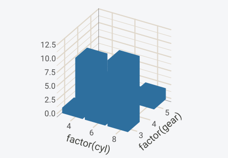
Two continuous variables are binned first.
geom_histogram_3d() counts observations in rectangles and
geom_hex_3d() in hexagons, drawn as hexagonal prisms.
stat_summary_2d_3d() and stat_summary_hex_3d()
bin the same way and set each height to a summary of z, the mean by
default.
ggplot(faithful, aes(eruptions, waiting)) +
geom_hex_3d(aes(fill = after_stat(count)), bins = 12) + coord_3d()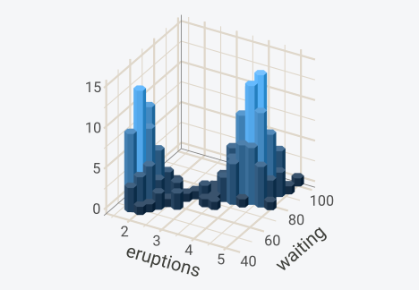
Extrusion extends an ordered x/y polygon between two heights. The z
value gives its endpoint. The base argument supplies the
starting height; a mapped zmin overrides it. Caps close the top and
bottom.
ring <- data.frame(x = c(0, 2, 2, 0), y = c(0, 0, 1, 1), z = 2)
ggplot(ring, aes(x, y, z = z)) + geom_extrude_3d(fill = "#2E6F9E") +
coord_3d()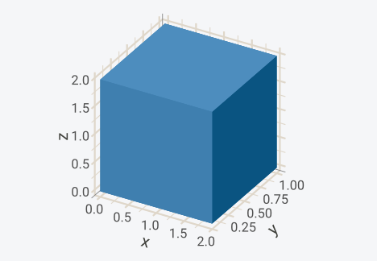
Stacking accumulates column heights separately above and below zero. It requires a linear continuous z scale and a shared zero baseline. Nudging shifts positions in transformed units.
stack <- data.frame(x = 1, y = 1, z = c(2, 3), part = c("a", "b"))
ggplot(stack, aes(x, y, z = z, fill = part)) +
geom_col_3d(position = position_stack_3d()) +
scale_fill_manual(values = c("#2E6F9E", "#9E5E0F")) + coord_3d()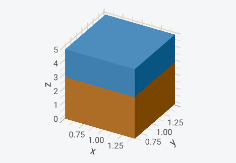
Binned counts in space
stat_bin_2d_3d() counts points in square x/y cells as
geom_hex_3d() does in hexagons. stat_bin_3d()
counts points in boxes of three-dimensional space and draws each
occupied box; geom_voxel_3d() draws given cells of a
regular grid as cubes, merging the faces shared by neighbours.
cells <- expand.grid(x = 1:4, y = 1:4, z = 1:4)
cells <- cells[(cells$x - 2.5)^2 + (cells$y - 2.5)^2 + (cells$z - 2.5)^2 < 4, ]
cells$half <- ifelse(cells$z > 2, "top", "bottom")
ggplot(cells, aes(x, y, z = z, fill = half)) + geom_voxel_3d() +
scale_fill_manual(values = c("#2E6F9E", "#9E5E0F")) + coord_3d()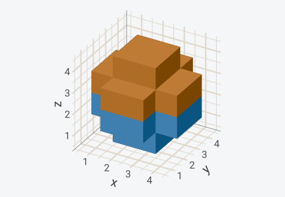
Distributions at x/y positions
The iris data record flower measurements in centimetres for three species. Place each species at one x position and use petal length as the distribution along z. A boxplot draws a prism between the quartiles, a median face, whiskers and individual outliers.
flowers <- ggplot(iris, aes(Species, y = 0, z = Petal.Length, fill = Species)) +
scale_y_continuous(limits = c(-1, 1), breaks = NULL, name = NULL)
flowers + geom_boxplot_3d(width = 0.6, depth = 0.4) +
scale_fill_manual(values = c("#2E6F9E", "#9E5E0F", "#2A7A7A")) +
coord_3d()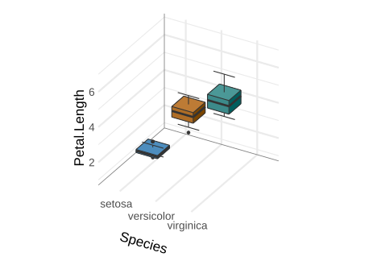
A violin shows the estimated density along z. The default wall mirrors that density along x; a revolved violin surrounds the vertical axis. Use discrete positions, or an explicit group for each numeric x/y cell.
flowers + geom_violin_3d(shape = "wall", n = 32) +
scale_fill_manual(values = c("#2E6F9E", "#9E5E0F", "#2A7A7A")) +
coord_3d()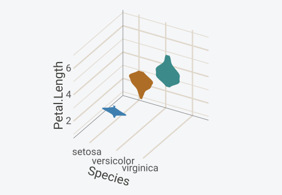
flowers + geom_violin_3d(shape = "revolve", n = 32, sides = 12) +
scale_fill_manual(values = c("#2E6F9E", "#9E5E0F", "#2A7A7A")) +
coord_3d()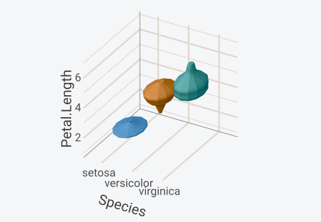
Waterfalls and stacked areas
A waterfall draws each group as a curtain from a baseline to its heights, ordered by x. Take three cross-sections of the built-in volcano elevation matrix. Each section occupies its own y position, with elevations measured in metres.
profiles <- expand.grid(x = seq(1, nrow(volcano), by = 4), y = c(15, 30, 45))
profiles$z <- volcano[cbind(profiles$x, profiles$y)]
ggplot(profiles, aes(x, y, z = z, group = y, fill = factor(y))) +
geom_waterfall_3d(base = 90) +
scale_fill_manual(values = c("#2E6F9E", "#9E5E0F", "#2A7A7A")) +
coord_3d()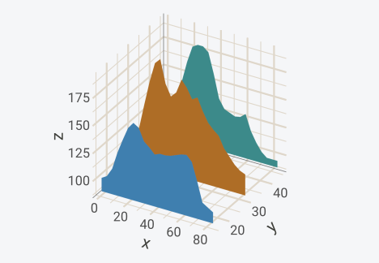
An area wall stacks groups that share an x lattice and a y position. The built-in US personal expenditure table records spending in billions of dollars. Place its five spending categories on one wall, with year along x and expenditure along z. Positive and negative values stack separately from zero.
spending <- as.data.frame(as.table(USPersonalExpenditure))
names(spending) <- c("category", "year", "expenditure")
spending$year <- as.numeric(as.character(spending$year))
ggplot(spending, aes(year, y = 0, z = expenditure,
group = category, fill = category)) +
geom_area_3d() + scale_fill_manual(values = c("#2E6F9E", "#B5342B", "#3F7A3D", "#9E5E0F", "#7A4F9E"),
labels = c("Food & tobacco", "Household", "Medical", "Personal care", "Education")) +
guides(fill = guide_legend(nrow = 3)) +
coord_3d() + theme(legend.position = "bottom")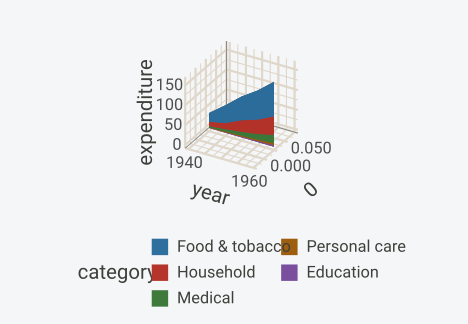
The default area position is position_stack_3d(). Choose position_fill_3d() to show proportions at each x position. Wall stacking requires a linear continuous z scale and a common zero baseline.
Intervals and summaries
An interval layer accepts lower and upper bounds on any combination of x, y and z. Summarise iris petal length at each species position with a mean and an interval extending one standard error on either side.
ggplot(iris, aes(Species, y = 0, z = Petal.Length)) +
stat_summary_3d(fun.data = mean_se, colour = "#2E6F9E", linewidth = 0.8) +
coord_3d()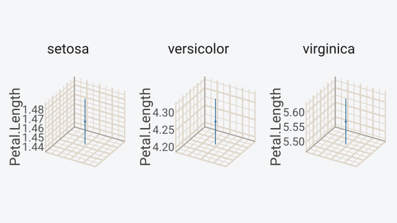
Summary tables containing cells with a single observation can
currently fail with
numbers of columns of arguments do not match. For those
tables, compute the summaries first and pass their bounds to an interval
layer.
Displaying intervals and summaries explains the meaning of the bounds, grouping and precomputed summary tables.
For supplied intervals, map both bounds of each axis. Here a small table gives three measured positions with stated x, y and z uncertainties. Cross-shaped caps extend along both perpendicular axes, so the endpoints remain visible as the camera turns.
measurements <- data.frame(x = c(1, 2, 3), y = c(2, 1, 3), z = c(3, 4, 2))
intervals <- ggplot(measurements, aes(x, y, z = z,
xmin = x - 0.2, xmax = x + 0.2, ymin = y - 0.3, ymax = y + 0.3,
zmin = z - 0.5, zmax = z + 0.5))
intervals + geom_errorbar_3d(width = 0.12, cap_plane = "cross",
linewidth = 0.8) +
geom_point_3d(size = 2.5, colour = "#2E6F9E") + coord_3d()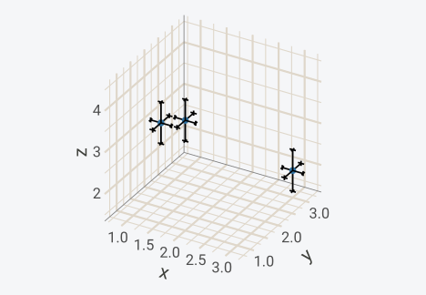
geom_linerange_3d() draws the interval segments, and geom_pointrange_3d() adds their centres. A crossbar draws a box and marks the centre with a line. Restrict this example to z bounds to see that box clearly.
ggplot(measurements, aes(x, y, z = z, zmin = z - 0.5, zmax = z + 0.5)) +
geom_crossbar_3d(width = 0.25, cap_plane = "cross", fill = "#2E6F9E") +
coord_3d()
A stem connects each position to a fixed value on one axis. Here each car’s fuel consumption is connected to zero. Change the base or map an endpoint to give individual stems different starting values.
ggplot(mtcars, aes(wt, hp, z = mpg)) +
geom_stem_3d(base = 0, colour = "#2E6F9E", linewidth = 0.7) + coord_3d()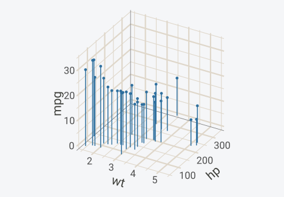
Reference lines and dimensions
Fix two intercepts to draw a reference line along the remaining axis. For an arbitrary line, supply a point and direction in transformed scale units; the line is cut to the box.
p + geom_point_3d(size = 3) +
geom_refline_3d(xintercept = 1, yintercept = 1, colour = "#B5342B") +
geom_abline_3d(point = c(0, 0, 1), direction = c(1, 1, 1),
colour = "#2E6F9E", linetype = 2) +
annotate_3d("text", x = 1, y = 1, z = 3, label = "reference", size = 5) +
coord_3d()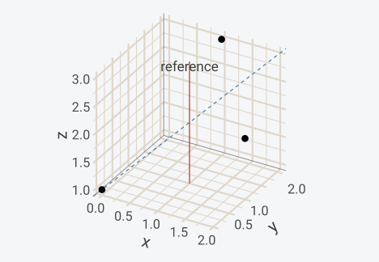
Fixed segments can be added with annotate_3d(). Supply all three coordinates at each end. This arrow joins the first and last positions in the point table.
p + geom_point_3d(size = 3) +
annotate_3d("segment", x = 0, y = 0, z = 1,
xend = 2, yend = 1, zend = 2, colour = "#2E6F9E", linewidth = 0.8,
arrow = grid::arrow(length = grid::unit(3, "mm"))) + coord_3d()
Annotate a fixed span with annotate_3d("bracket", ...).
The two endpoints use data coordinates; the offset uses fractions of the
box dimensions. These examples label a supplied distance, with extension
lines and arrowheads on the dimension version. Use geom_bracket_3d() to map
spans from a data table.
span <- ggplot(data.frame(x = c(0, 2), y = 0, z = 1), aes(x, y, z = z)) +
geom_point_3d(size = 3)
span + annotate_3d("bracket", x = 0, y = 0, z = 1, xend = 2, yend = 0, zend = 1,
label = "span", size = 5, offset = c(0, 0, 0.12)) +
coord_3d(clip_data = FALSE)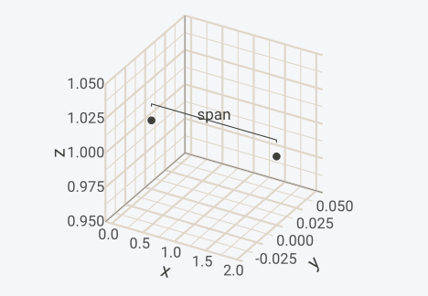
span + annotate_3d("bracket", x = 0, y = 0, z = 1, xend = 2, yend = 0, zend = 1,
type = "dimension", label = "2 m", size = 5,
offset = c(0, -0.12, 0)) + coord_3d(clip_data = FALSE)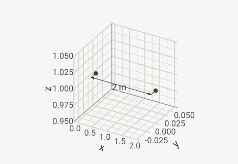
Reference and clipping planes
A reference plane marks a threshold through the box. An oblique plane takes a normal vector and a point on the plane; for the plane z = a + b x + c y, use the normal (-b, -c, 1) and point (0, 0, a).
s + geom_surface_3d(fill = "#2E6F9E") +
geom_plane_3d(zintercept = 0.5, fill = "#9E5E0F", alpha = 0.4) + coord_3d()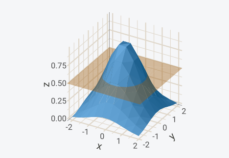
A clipping plane keeps the half-space its normal points into. Close a cut solid by enabling its cap. Here the normal points towards positive y, leaving the part of a sphere at y greater than or equal to zero.
ggplot(data.frame(x = 0, y = 0, z = 0), aes(x, y, z = z)) +
geom_sphere_3d(radius = 1, detail = 2, fill = "#2A7A7A") +
coord_3d(aspect = "data", clip_planes = list(
clip_plane_3d(normal = c(0, 1, 0), point = c(y = 0), cap = TRUE)))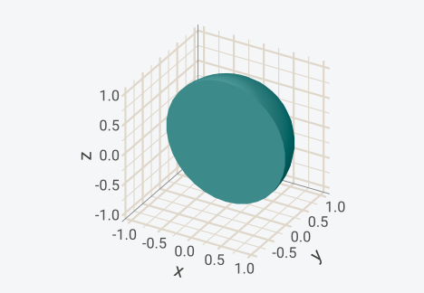
The coordinate’s clipping planes apply to every layer. A layer’s own plane list replaces that list; an empty list keeps the layer whole. Open surfaces receive caps only where the cut forms a closed outline. See clip_plane_3d() for the plane conventions.
Positions
Position adjustments move data before drawing, as in ggplot2.
position_nudge_3d() shifts by a fixed amount along x, y or
z, position_jitter_3d() adds random noise along all three
axes, and position_dodge_3d() places groups side by side
within a cell. Ten repeated observations at each of nine positions
overlap exactly until they are jittered.
repeats <- expand.grid(x = 1:3, y = 1:3, rep = 1:10)
repeats$z <- repeats$x + repeats$y
ggplot(repeats, aes(x, y, z = z)) +
geom_point_3d(position = position_jitter_3d(seed = 1), colour = "#2E6F9E") +
coord_3d()
position_project_3d() flattens a layer onto the walls of
the panel box, which shows the two-dimensional margins of a cloud next
to the cloud itself. geom_rug_3d() draws the
one-dimensional margins as ticks on the walls.
set.seed(1)
cloud <- data.frame(x = rnorm(60), y = rnorm(60), z = rnorm(60))
ggplot(cloud, aes(x, y, z = z)) +
geom_point_3d(colour = "grey60", position = position_project_3d(c("floor", "back"))) +
geom_rug_3d(sides = c("floor:x", "floor:y"), alpha = 0.5) +
geom_point_3d(colour = "#2E6F9E") + coord_3d()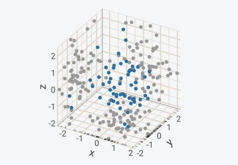
Adapting a layer
Positioning groups and observations develops grouped columns, aligned labels and proportions from these position adjustments.
The layer adapter equips a registered ggplot2 geom with three-dimensional scene emission. Extension authors register an emitter to describe how another geom produces geometry. The registration help page describes the callback arguments.
p + layer_3d(geom_point(size = 3)) + coord_3d()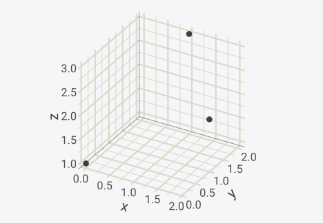